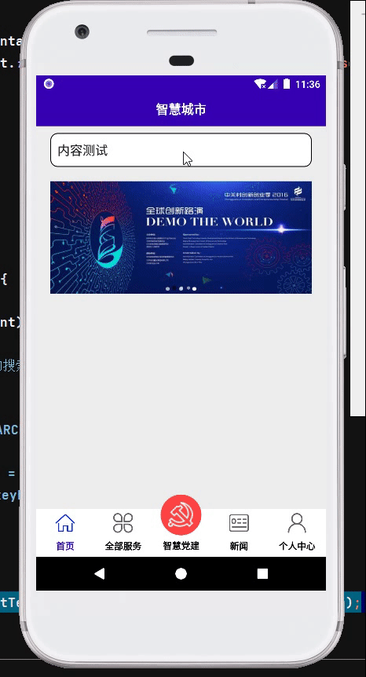

效果预览

布局属性
首先需要在EditText的布局中插入android:imeOptions=”actionSearch”和android:inputType=”text”属性，使键盘右下角显示搜索按钮
1
2
3
4
5
6
7
8
9
10
11
12
13
| <EditText
android:hint="新闻搜索"
android:id="@+id/edit_newsSearch"
android:inputType="text"
android:lines="1"
android:imeOptions="actionSearch"
android:layout_marginTop="10dp"
android:paddingRight="10dp"
android:paddingLeft="10dp"
android:layout_marginRight="20dp"
android:layout_marginLeft="20dp"
android:layout_width="match_parent"
android:layout_height="48dp"/>
|
注意：这里一定不要添加android:maxLength=”1”，添加后会无视android:imeOptions=”actionSearch”的效果
程序实现
然后在java代码中给软键盘添加监听事件
1
2
3
4
5
6
7
8
9
10
11
12
13
14
15
16
17
18
19
20
21
|
edit_newsSearch.setOnKeyListener(new View.OnKeyListener() {
@Override
public boolean onKey(View view, int i, KeyEvent keyEvent) {
if (i == keyEvent.KEYCODE_ENTER){
Toast.makeText(getContext(),edit_newsSearch.getText().toString(),Toast.LENGTH_SHORT).show();
}
return false;
}
});
|
拓展：在EditText的父布局或者顶层布局中添加属性android:focusableInTouchMode=”true”和android:focusable=”true”，可以禁止EditText自动获取焦点